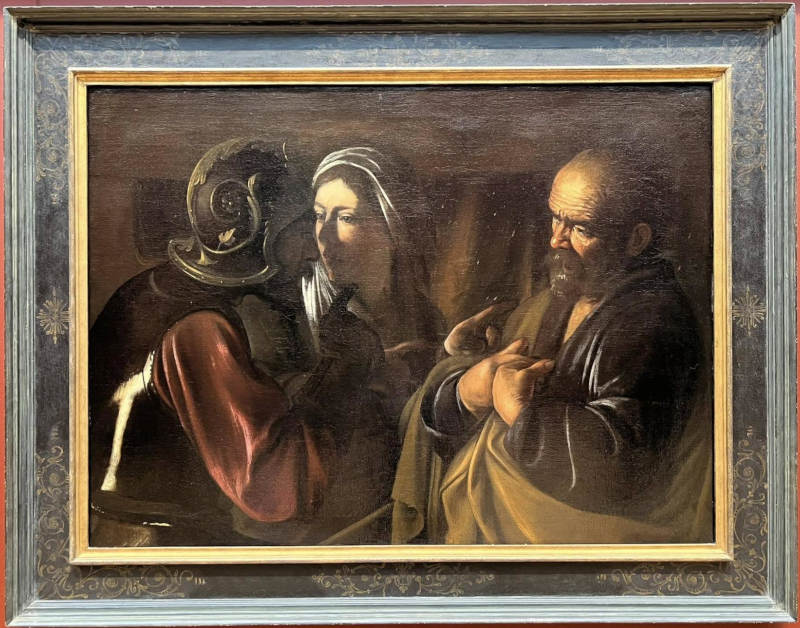

Sometimes, artworks lack supporting documentation or have legitimate gaps in their circulation histories. But sometimes gaps in ownership, suspicious dealers, or phrases like "from a private Swiss collection" can indicate that an artwork may have a contentious history. At times the names and locations of problematic handlers are intentionally omitted or obfuscated from sales records and other published information. It appears that the accession record contains a mistake in the provenance record regarding one of the possessors, which could hide a darker history. What is the name of the venue where this possessor met a client on 14 May 1942?
